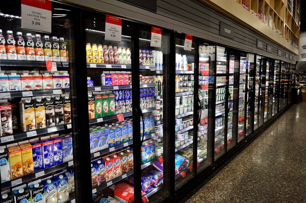
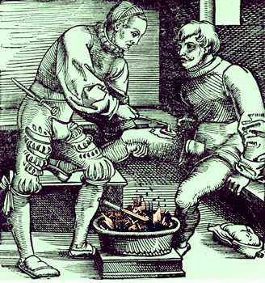
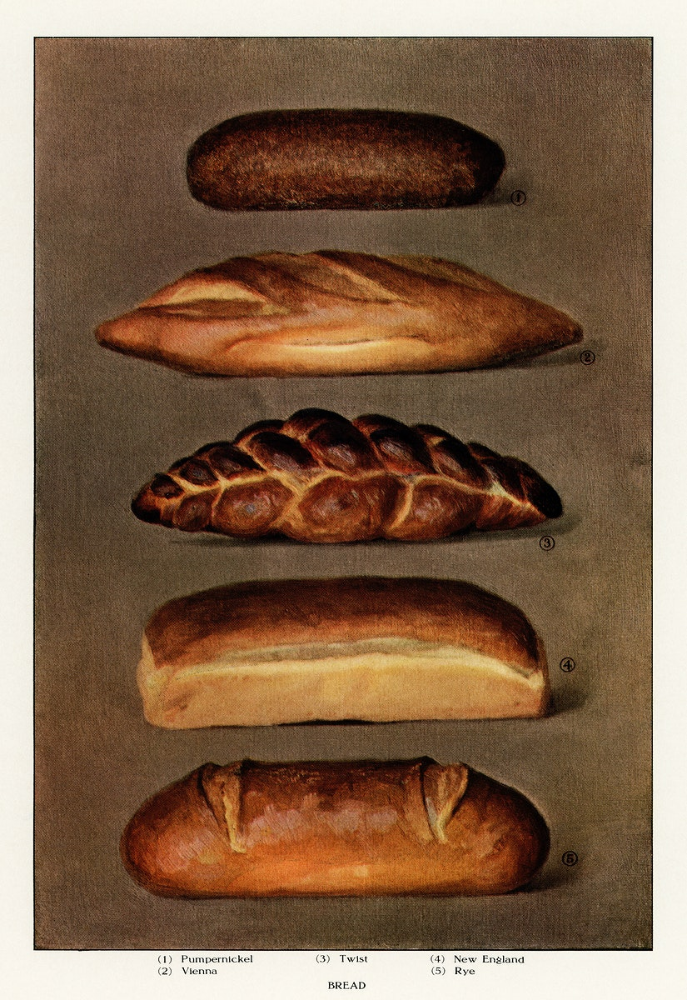
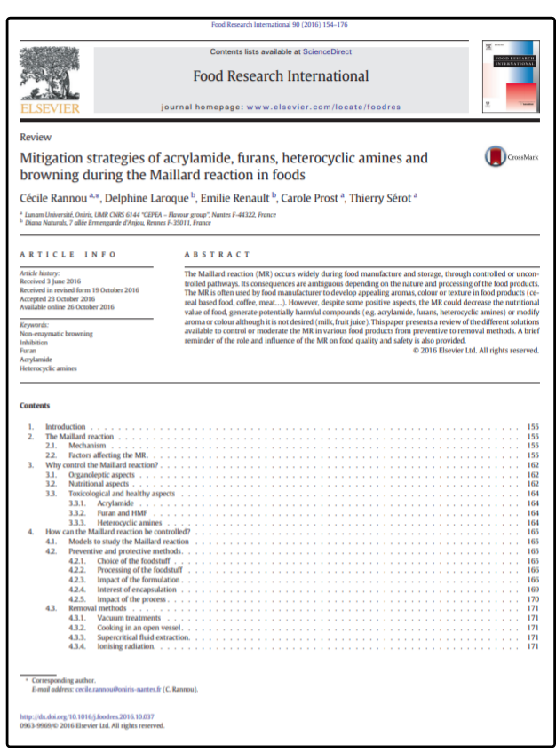
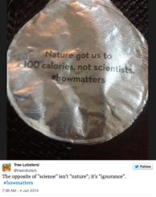

Epistemology:
Science & Tradition
Dr Shane V Crowley
Press down for controls and right to progress
Interacting with the Slides
📺Full screen: press the F key
🎮View video controls: hover cursor over video
👩🎨 Draw: click icon or press C
🌈Pen colour: press X to cycle and Y to revert
💁 Options and Info: click icon or press M
To view the video just follow the links:
👉https://youtu.be/vpWNLZmziC8
Click here for printable version👈
The Omnivore's Dilemma
The Omnivore's Dilemma
The Doctrine of Signatures
Problems with DoS
- Assumption: the world is made to serve us
- Scope: the theory has limited extension
- Easy-to-vary: DoS is highly subjective
DoS is better understood as a mnemonic than a theory
Effect of Bread Fortification on US Pellegra Deaths
Adapted from McClements, D.J., Vega, C., McBride, A. E., & Decker, E. A. (2011). In Defence of Food Science. Gastronomica, Summer, 76-84.Kinds of Knowledge
Much knowledge of food is procedural
Science generates declarative knowledge
A feature of this knowledge is its generalisability
Obstacles to Knowledge
Obstacles to Knowledge
Maillard Browning (MB)
Maillard Browning (MB)
Searing and Sous Vide
- MB is more advanced at high T values
- MB occurs in sous vide but is less advanced
- Sous vide and searing are often combined
- Adding glucose or alkali may speed up reaction
Traditional Know-how
Mac Con Iomaire, M. and P. Gallagher (2009). The Potato in Irish Cuisine and Culture. Journal of Culinary Science & Technology.The Irish had a peculiar way of cooking potatoes ‘with and without the bone or the moon’ [...] par boiling the potato leaving the core undercooked [...] The partially cooked potato lay in the stomach creating a second digestion period [...]

Scientific Know-why
Anti-science Rhetoric
Appeals to "common sense" knowledge of food
Conclusion
Next week: The science in 'food science'
shane.crowley@ucc.ie